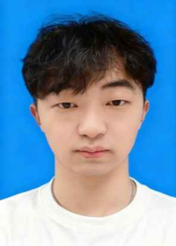

应聘岗位：unity程序
负责：角色控制、相机系统、碰撞与伤害判定，关卡逻辑、敌人 AI、道具系统等
作品与源码：https://github.com/1443887150/AfterLand
负责：角色控制、相机镜头过渡，实现位置/状态同步、复合技能逻辑，战斗表现，使用事件与协程管理技能生命周期与连招判定
作品与源码：https://github.com/1443887150/The-Lonely-Sword